Welcome
This tutorial will show you how to make and enhance bar charts with the ggplot2 package. You will learn how to:
- make and interpret bar charts
- customize bar charts with aesthetics and parameters
- use position adjustments
- use facets to create subplots
The tutorial is adapted from R for Data Science by Hadley Wickham and Garrett Grolemund, published by O’Reilly Media, Inc., 2016, ISBN: 9781491910399. You can purchase the book at shop.oreilly.com.
The tutorial uses the ggplot2 and dplyr packages, which have been pre-loaded for your convenience.
Bar Charts
How to make a bar chart
To make a bar chart with ggplot2, add geom_bar() to the ggplot2 template. For example, the code below plots a bar chart of the cut variable in the diamonds dataset, which comes with ggplot2.
ggplot(data = diamonds) +
geom_bar(mapping = aes(x = cut))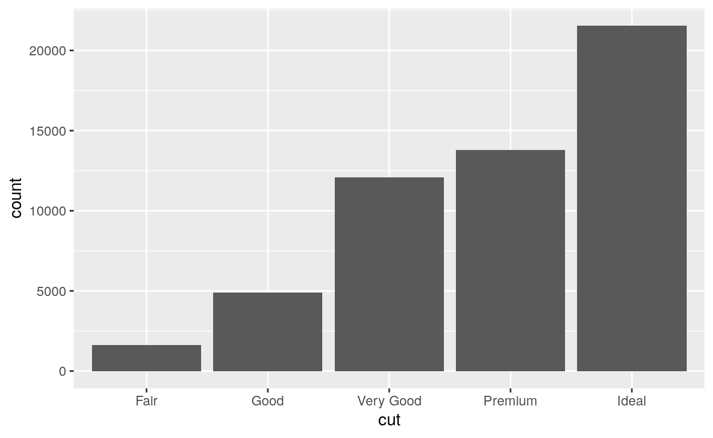
The y axis
You should not supply a \(y\) aesthetic when you use geom_bar(); ggplot2 will count how many times each \(x\) value appears in the data, and then display the counts on the \(y\) axis. So, for example, the plot above shows that over 20,000 diamonds in the data set had a value of Ideal.
You can compute this information manually with the count() function from the dplyr package.
diamonds %>%
count(cut)geom_col()
Sometimes, you may want to map the heights of the bars not to counts, but to a variable in the data set. To do this, use geom_col(), which is short for column.
ggplot(data = pressure) +
geom_col(mapping = aes(x = temperature, y = pressure))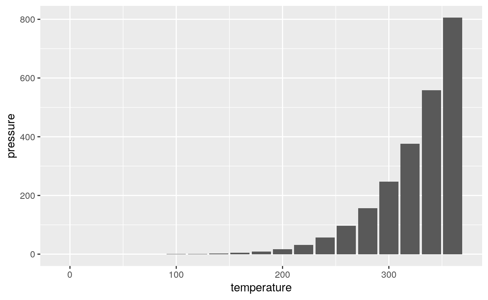
geom_col() data
When you use geom_col(), your \(x\) and \(y\) values should have a one to one relationship, as they do in the pressure data set (i.e. each value of temperature is paired with a single value of pressure).
pressureExercise 1 - Make a bar chart
Use the code chunk below to plot the distribution of the color variable in the diamonds data set, which comes in the ggplot2 package.
ggplot(data = diamonds) +
geom_bar(mapping = aes(x = color))Exercise 2 - Interpretation
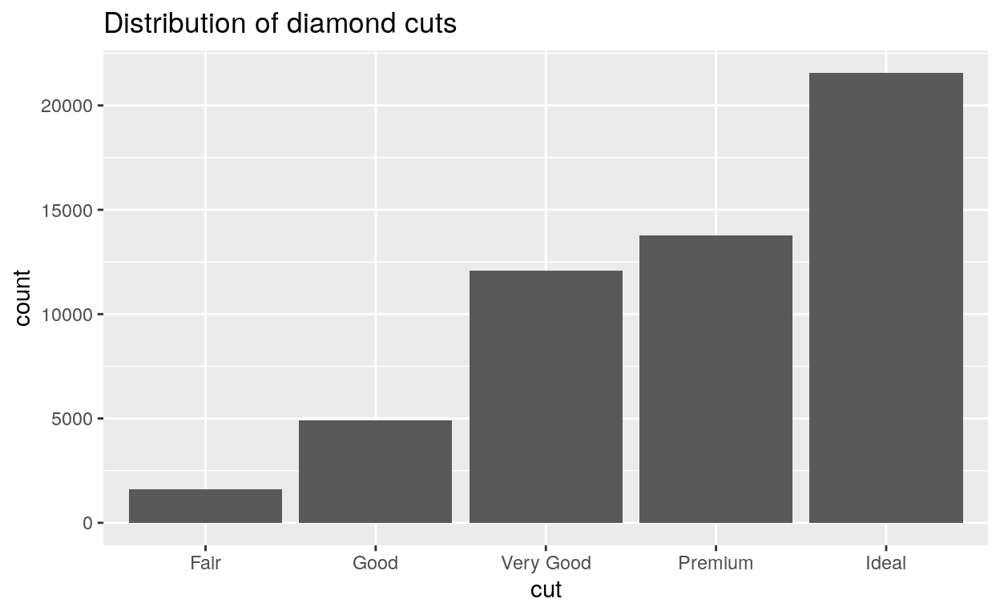
Exercise 3 - What went wrong?
Diagnose the error below and then fix the code chunk to make a plot.
ggplot(data = pressure) +
geom_bar(mapping = aes(x = temperature, y = pressure))Error: stat_count() must not be used with a y aesthetic.
ggplot(data = pressure) +
geom_col(mapping = aes(x = temperature, y = pressure))Exercise 4 - count() and col()
Recreate the bar graph of color from exercise one, but this time first use count() to manually compute the heights of the bars. Then use geom_col() to plot the results as a bar graph. Does your graph look the same as in exercise one?
diamonds %>%
count(color) %>%
ggplot() +
geom_col(mapping = aes(x = color, y = n))Aesthetics
Aesthetics for bars
geom_bar() and geom_col() can use several aesthetics:
- alpha
- color
- fill
- linetype
- size
One of these, color, creates the most surprising results. Predict what the code below will return and then run it.
ggplot(data = diamonds) +
geom_bar(mapping = aes(x = cut, color = cut))fill
The color aesthetic controls the outline of each bar in your bar plot, which may not be what you want. To color the interior of each bar, use the fill aesthetic:
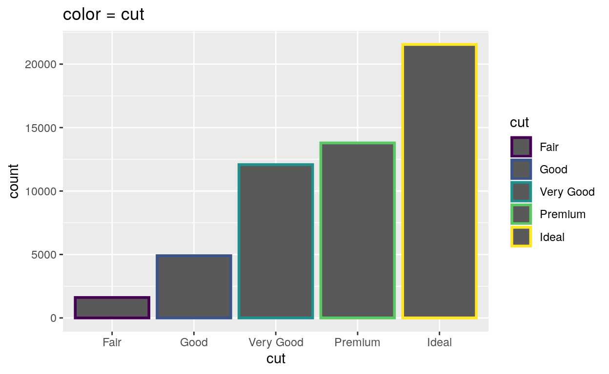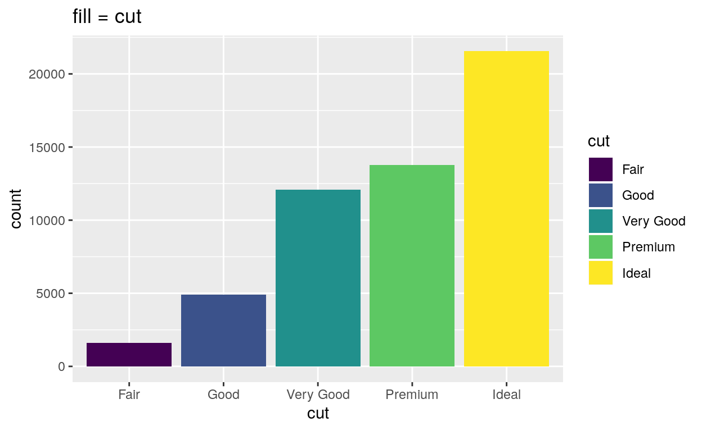
Use the code chunk below to experiment with fill, along with other geom_bar() aesthetics, like alpha, linetype, and size.
ggplot(data = diamonds) +
geom_bar(mapping = aes(x = cut, color = cut))Width
You can control the width of each bar in your bar chart with the width parameter. In the chunk below, set width = 1, then width = 0.5. Can you spot the difference?
ggplot(data = diamonds) +
geom_bar(mapping = aes(x = cut, fill = cut), width = 0.9)Notice that width is a parameter, not an aesthetic mapping. Hence, you should set width outside of the aes() function.
Exercise 5 - aesthetics
Create a colored bar chart of the class variable from the mpg data set, which comes with ggplot2. Map the interior color of each bar to class.
ggplot(data = mpg) +
geom_bar(mapping = aes(x = class, fill = class))Position adjustments
Positions
If you map fill to a new variable, geom_bar() will display a stacked bar chart:
ggplot(data = diamonds) +
geom_bar(mapping = aes(x = cut, fill = clarity))
This plot displays 40 different combinations of cut and clarity, each displayed by its own rectangle. geom_bar() lays out the rectangles by stacking rectangles that have the same cut value on top of one another. You can change this behavior with a position adjustment.
Position = “dodge”
To place rectangles that have the same cut value beside each other, set position = "dodge".
ggplot(data = diamonds) +
geom_bar(mapping = aes(x = cut, fill = clarity), position = "dodge")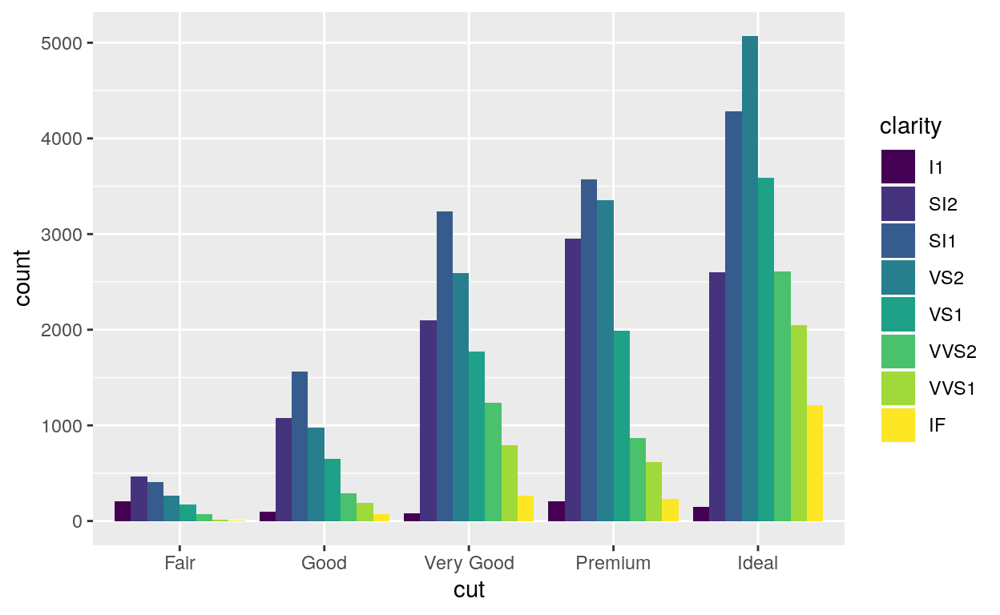
This plot shows the same rectangles as the previous chart; however, it lays out rectangles that have the same cut value beside each other.
Position = “stack”
To create the familiar stacked bar chart, set position = "stack" (which is the default for geom_bar()).
ggplot(data = diamonds) +
geom_bar(mapping = aes(x = cut, fill = clarity), position = "stack")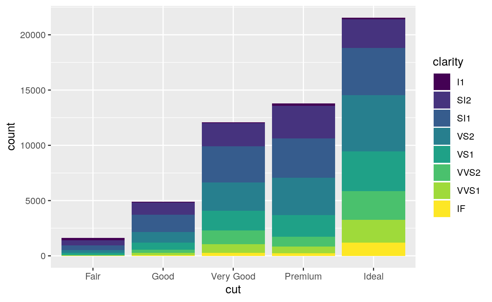
Position = “fill”
To expand each bar to take up the entire \(y\) axis, set position = "fill". ggplot2 will stack the rectangles and then scale them within each bar.
ggplot(data = diamonds) +
geom_bar(mapping = aes(x = cut, fill = clarity), position = "fill")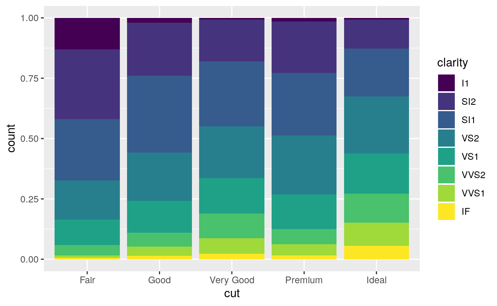
This makes it easy to compare proportions. For example, you can scan across the bars to see how the proportion of IF diamonds changes from cut to cut.
What is a position adjustment?
Every geom function in ggplot2 takes a position argument that is preset to a reasonable default. You can use position to determine how a geom should adjust objects that would otherwise overlap with each other.
For example, in our plot, each value of cut is associated with eight rectangles: one each for I1, SI2, SI1, VS2, VS1, VVS2, VVS1, and IF. Each of these eight rectangles deserves to go in the same place: directly above the value of cut that it is associated with, with the bottom of the rectangle placed at count = 0. But if we plotted the plot like that, the rectangles would overlap each other.
Here’s what that would look like if you could peek around the side of the graph.

Position = “identity”
..and here’s what that would look like if you could see the graph from the front. You can make this plot by setting position = "identity".
ggplot(data = diamonds) +
geom_bar(mapping = aes(x = cut, fill = clarity), position = "identity")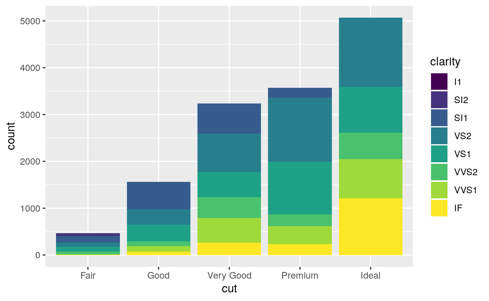
Position adjustments tell ggplot2 how to re-distribute objects when they overlap. position = "identity" is the “adjustment” that let’s objects overlap each other. It is a bad choice for bar graphs because the result looks like a stacked bar chart, even though it is not.
Exercise 6 - Positions
Use the code chunk to recreate the plot you see below. Remember: color is the name of a variable in diamonds (not to be confused with an aesthetic).
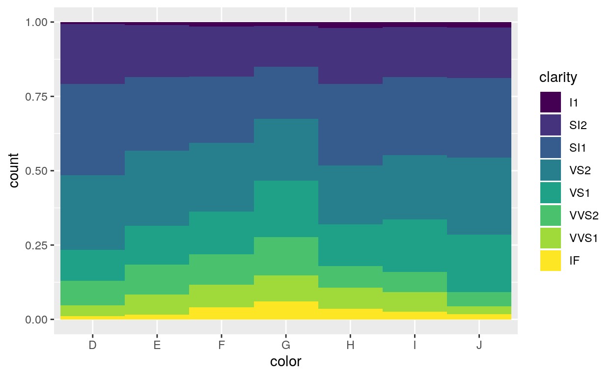
ggplot(data = diamonds) +
geom_bar(mapping = aes(x = color, fill = clarity), position = "fill", width = 1)Exercise 7 - Positions
Use the code chunk to recreate the plot you see below. Remember: color is the name of a variable in diamonds (not to be confused with an aesthetic).
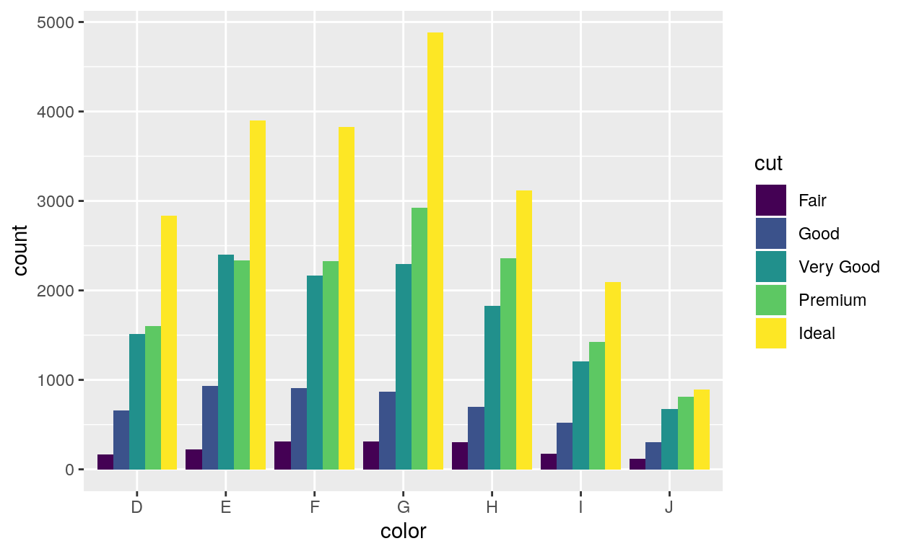
ggplot(data = diamonds) +
geom_bar(mapping = aes(x = color, fill = cut), position = "dodge")Exercise 8 - position = “identity”
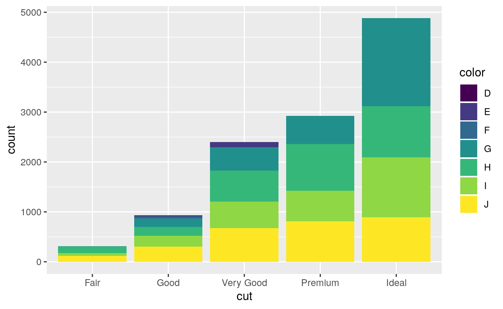
Facets
Facetting
You can more easily compare subgroups of data if you place each subgroup in its own subplot, a process known as facetting.

facet_grid()
ggplot2 provides two functions for facetting. facet_grid() divides the plot into a grid of subplots based on the values of one or two facetting variables. To use it, add facet_grid() to the end of your plot call.
The code chunks below, show three ways to facet with facet_grid(). Spot the differences between the chunks, then run the code to learn what the differences do.
ggplot(data = diamonds) +
geom_bar(mapping = aes(x = color)) +
facet_grid(clarity ~ cut)ggplot(data = diamonds) +
geom_bar(mapping = aes(x = color)) +
facet_grid(. ~ cut)ggplot(data = diamonds) +
geom_bar(mapping = aes(x = color)) +
facet_grid(clarity ~ .)facet_grid() recap
As you saw in the code examples, you use facet_grid() by passing it a formula, the names of two variables connected by a ~.
facet_grid() will split the plot into facets vertically by the values of the first variable: each facet will contain the observations that have a common value of the variable. facet_grid() will split the plot horizontally by values of the second variable. The result is a grid of facets, where each specific subplot shows a specific combination of values.
If you do not wish to split on the vertical or horizontal dimension, pass facet_grid() a . instead of a variable name as a place holder.
facet_wrap()
facet_wrap() provides a more relaxed way to facet a plot on a single variable. It will split the plot into subplots and then reorganize the subplots into multiple rows so that each plot has a more or less square aspect ratio. In short, facet_wrap() wraps the single row of subplots that you would get with facet_grid() into multiple rows.
To use facet_wrap() pass it a single variable name with a ~ before it, e.g. facet_wrap( ~ color).
Add facet_wrap() to the code below to create the graph that appeared at the start of this section. Facet on cut.
ggplot(data = diamonds) +
geom_bar(mapping = aes(x = color, fill = cut))ggplot(data = diamonds) +
geom_bar(mapping = aes(x = color, fill = cut)) +
facet_wrap( ~ cut)scales
By default, each facet in your plot will share the same \(x\) and \(y\) ranges. You can change this by adding a scales argument to facet_wrap() or facet_grid().
scales = "free"will let the \(x\) and \(y\) range of each facet varyscales = "free_x"will let the \(x\) range of each facet vary, but not the \(y\) rangescales = "free_y"will let the \(y\) range of each facet vary, but not the \(x\) range. This is a convenient way to compare the shapes of different distributions:
ggplot(data = diamonds) +
geom_bar(mapping = aes(x = color, fill = cut)) +
facet_wrap( ~ cut, scales = "free_y")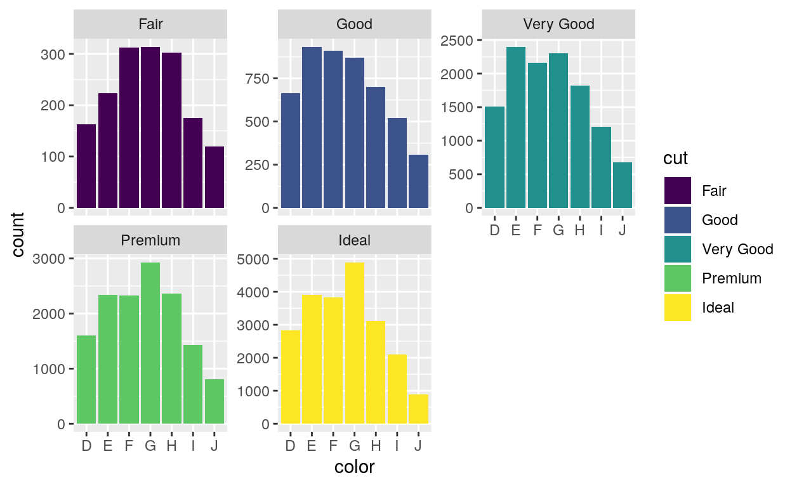
Recap
In this tutorial, you learned how to make bar charts; but much of what you learned applies to other types of charts as well. Here’s what you should know:
- Bar charts are the basis for histograms, which means that you can interpret histograms in a similar way.
- Bars are not the only geom in ggplot2 that use the fill aesthetic. You can use both fill and color aesthetics with any geom that has an “interior” region.
- You can use the same position adjustments with any ggplot2 geom:
"identity","stack","dodge","fill","nudge", and"jitter"(we’ll learn about"nudge"and"jitter"later). Each geom comes with its own sensible default. - You can facet any ggplot2 plot by adding
facet_grid()orfacet_wrap()to the plot call.